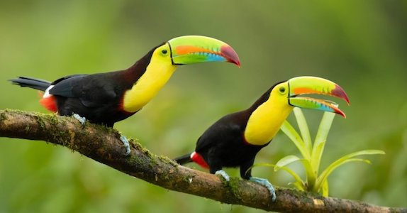
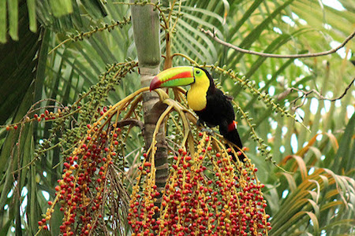

Wow! Based on your answers... You share similarities with a Keel-Billed Toucan (Ramphastos sulfuratus)

The Keel-Billed Toucan is a beautiful, friendly and intelligent bird. These toucans are VERY social birds, rarely seen alone. Usually they fly in flocks of around 6-12 toucans through lowland rainforests. Their diet consists mainly of fruits and sometimes insects and small lizards. Like the Keel-Billed Toucan, you are an intelligent, friendly and social person who truly enjoys the company of the people you are close to.
Click on Ceasar to Restart!